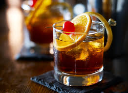

Old Fashioned

Ingredients
- 1-1/2 parts Maker's Mark Bourbon
- Splash of water
- 2 dashes Angostura Bitters
- 1 tsp. sugar
- Orange peel
- Cherry for garnish
Visit Maker's Mark website!
Directions
- Dissolve or muddle sugar with a splash of water in an Old Fashioned glass.
- Fill glass 3/4 full of ice.
- Add Maker's Mark and bitters and stir.
- Garnish with orange peel and cherry.
Contact Me
University address:
32 Campus Drive
Missoula, MT 59812